(Much of this material is derived from Goodrich & Tamassia’s slides widely available on the Web.)
A multi-way search tree is an ordered tree such that
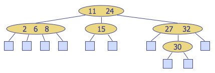
Multi-way inorder traversal can be defined by extension of BST inorder traversal to visit the keys in increasing order:
Visit item (ki, oi) of node v between the recursive traversals of the subtrees of v rooted at children vi and vi+1.
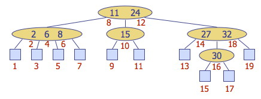
Searching can similarly be extended to multi-way trees by searching within each node as well as down the tree:
For example, searching for key 30:
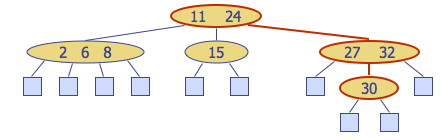
These are multi-way trees restricted in two ways:
The internal nodes are called 2-nodes, 3-nodes or 4-nodes, depending on the number of children they have.
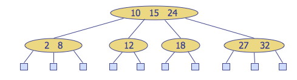
Theorem: A (2,4) tree storing n items has height Θ(log n).
Proof:
Let h be the height of a (2,4) tree with n items. The tallest possible tree (worst case) for a fixed n is when all internal nodes are 2-nodes (i.e., the tree is equivalent to a binary tree), so we restrict consideration to this case. Due to the depth property, the tree at depth h-1 is filled, so it is a complete binary tree.
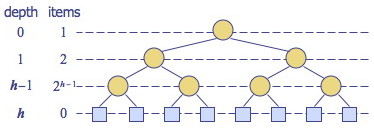
The figure illustrates the number of nodes in each level of a complete binary
tree. Since there are at least 2_i_ items at depth i = 0, … , h-1 and no
items at depth h (the leaves store no items):
n ≥ 1 + 2 + 4 + … + 2_h-1
(we use ≥ because there could be more items in internal 3-nodes or 4-nodes,
leading to “better cases” where _n increases without a penalty in h).
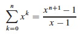
Applying formula A5 (shown) for geometric series with n = h-1 and x = 2,
1 + 2 + 4 + … + 2_h-1 = Σ_k=0,h-12_k_ = (2(h-1) + 1 - 1)/(2 - 1) = 2_h_
- 1, so
n ≥ = 2_h_ - 1 or n + 1 ≥ 2_h_
Taking the log of both sides: lg (n + 1) ≥ h.
Thus, h = Θ(lg n).
(See also similar facts concerning full binary trees in Topic 8.)
Since searching in a (2,4) tree with n items requires time proportional to a path from root to leaves, searching is O(lg n) time.
We will examine insertion and deletion briefly to understand the conceptual cases.
Insert a new item keyed by k into (not below) the parent of the leaf reached by searching for k. (In this respect, (2,4) trees differ from binary search trees.)
This preserves depth but may cause overflow (a node may become a 5-node).
Example: Inserting 30, we find its position between 27 and 32. However inserting here causes overflow:
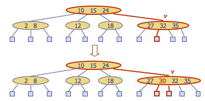
Overflow is handled with a split operation, as illustrated below with a simpler tree:
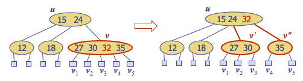
(Note: Sedgewick splits 4-nodes on the way down while searching for the insertion position, guaranteeing that there will be no overflow. Both Goodrich & Tamassia and Cormen et al. take the other approach, propagating splits upwards only as needed. The asymptotic time complexity remains the same.)
A tree with n items has Θ(lg n) height. The algorithm first searches for the insertion location, which may require visiting h = Θ(lg n) nodes (Θ, not O, because we must go to the leaves in all cases). The insertion takes Θ(1) time. If there is overflow, splits (taking Θ(1) time each) may be propagated upwards to as many as O(lg n) nodes. Since the Θ(lg n) overrides the possibility of slower growing functions in O(lg n), insertion is Θ(lg n).
If the entry to be deleted is in a node that has internal nodes as children, we replace the entry to be deleted with its inorder successor and delete the latter entry. Example: to delete key 24, we replace it with 27 (inorder successor):
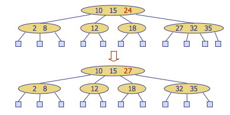
This reduces deletion of an entry to the case where the item is at the node with leaf children.
Deletion of an entry from a node v may cause underflow, where node v becomes a 1-node with one child and no keys. Underflow at node v with parent u is handled in two cases.
Case 1: An adjacent sibling of v is a 2-node. Perform a fusion operation, merging v with the adjacent 2-node sibling w and moving an entry from u to the merged node v’.
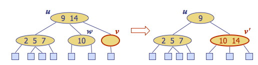
After a fusion, the underflow may propagate to the parent u, for at most O(lg n) adjustments up the tree.
Case 2: An adjacent sibling w of v is a 3-node or a 4-node. Perform a transfer operation: move a child of w to v; an item from u to v; and an item from w to u.
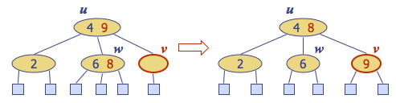
A transfer eliminates underflow.
The algorithm first searches for the item to delete, which requires visiting h = Θ(lg n) nodes on the way down the tree, either to find a bottom level key to delete, or to find the successor of a key in an internal node to delete. Underflow is handled with up to O(lg n) fusions and transfers, each taking Θ(1) time. Thus deletion is Θ(lg n).
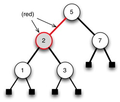
A red-black tree (RBT) is a binary search tree with the following additional properties:
These properties seem rather arbitrary until we consider the correspondence with (2,4) trees shortly, but first let’s see how the properties hold in an example …
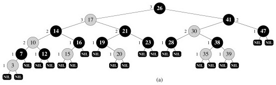
A single extra bit is required on each node to mark it as “red” or “black”.
To save space, we can represent the leaf nodes and the parent with a single node, T.nil:
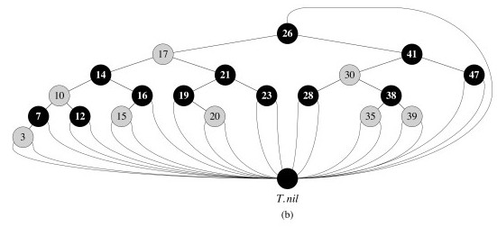
This also simplifies the code, as we can follow pointers without having to check for null pointers.
We usually don’t draw T.nil:
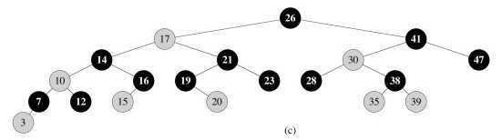
It would be rather complex to implement and manipulate 2-nodes, 3-nodes and 4-nodes. One motivation for red-black trees is that they provide a binary tree representation of (2,4) trees, enabling us to manipulate only one kind of node. The mapping is as follows (you should make sure you understand this well before going on!):
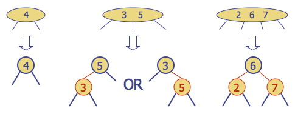
Red nodes (and the links from their parents) capture the internal structure of a (2,3) node;
Black nodes (and the links from their parents) capture the structure of the (2,3) tree itself.
At the same time as they represent (2,4) trees, RBTs are also Binary Search Trees: they satisfy the Binary Search Tree property. For example, here is a RBT: we can search for keys or enumerate elements in order as usual:
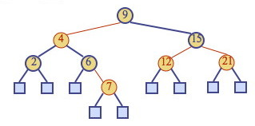
In order to maintain the Red-Black-Tree properties, it will be necessary to do structural rotations. These rotations are designed to not disrupt the BST property. For example, this rotation does not disturb the BST ordering of keys 9, 11, 12, 14, 17, 18, 19:
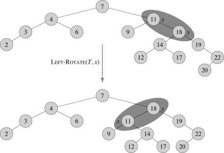
Theorem: A red-black tree storing n items has height Θ(lg n).
Proof:
(See Cormen et al. for a proof not relying on (2,4) trees.)
Therefore, searching in a red-black tree with n items takes O(lg n) time (O rather than Θ as we may find the key in an internal node).
We now consider insertion and deletion. Please see the textbook for the many details of implementation in pseudocode, etc.: here we will concentrate on seeing how the RBT operations correspond to (2,4) tree operations.
To insert an element with key k, perform the insertion for binary search trees (except that conceptually we insert k in an internal node with null children, not at a leaf node), and color the newly inserted node z red, unless it is the root.
This preserves the color, root, external, and depth properties. (You should check this in the example below.)
If the parent v of z is black, this also preserves the internal property and we are done.
Else (v is red), we have a double red (i.e., a violation of the internal property), which requires a reorganization of the tree. For example, insert 4:
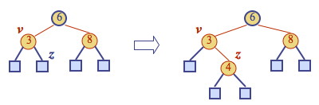
A double red with child z and parent v is dealt with in two cases. Let w be the sibling of v (and hence the uncle of z).
Case 1: w is black. The double red is an incorrect representation of a 4-node. (We will fix this with restructuring). For example, the RBT on the left is an incorrect representation of the (2,4) tree on the right:
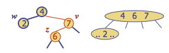
Case 2: w is red. The double red corresponds to an overflow in the (2,4) tree. (We will fix this with recoloring, which is the equivalent of a (2,4) split.) For example:
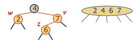
Restructuring remedies a child-parent double red when the parent red node has a black sibling. It restores the correct representation (internal property) of a 4-node, leaving other RBT and BST properties intact:
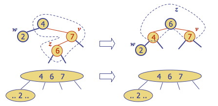
There are four restructuring configurations depending on whether the double red nodes are left or right children. They all lead to the same end configuration of a black with two red children:
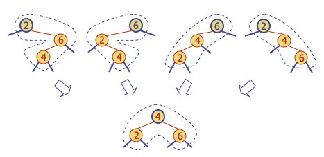
After a restructuring, the double red has been remedied without violating any of the other properties (you should verify this): there is no need to propagate changes upwards.
Notice that the height of the subtree tree has been reduced by one. **This is the operation that keeps the trees balanced to within a constant factor of lg(_n) height**, by ensuring that the height of the RBT is no more than twice that of the (necessarily balanced) 2-4 tree it represents. _Do you see why?
Recoloring remedies a child-parent double red when the parent red node has a red sibling. The parent v and its sibling w become black and the grandparent u becomes red, unless it is the root.
It is equivalent to performing a split on a 5-node in a (2,4) tree. (When there is a double red and yet another red in the parent’s sibling, we are trying to collect too many keys under the grandparent.) For example, the RBT recoloring on the top corresponds to the (2,4) transformation on the bottom:
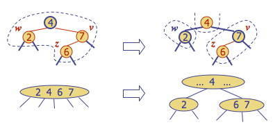
Notice that in this example the parent “4” is now red, meaning it belongs to its parent node in the (2,4) tree. The double red violation may propagate to this parent in the RBT, which corresponds to the overflow propagating up the (2,4) tree, requiring further repair.
We already established that insertion in (2,4) trees is Θ(lg n) due to their height. Since RBTs are only at most twice as high, we might expect this result to transfer, and it does, but it needs to be shown separately since the manipulations of the RBT are different. So:
Thus insertion is Θ(lg n).
Note: A top-down version of this algorithm is also possible, restructuring on the way down and requiring only one pass through the tree. See the Sedgewick reading distributed.
To remove item with key k, we first perform the BST deletion (modified for our representational changes using T.nil).
Because deletion of a node higher in the tree involves replacing it with its successor, which is then deleted, deletion always involves an internal and an external node.
We can preserve the RBT properties at the new internal location of the successor by giving the successor the color of the node deleted, so we need only be concerned with possible violations of RBT properties at the bottom of the tree, where the successor was moved from, or where a node without a successor was deleted.
Let v be the internal node removed, w the external node removed, and r the sibling of w:
x
\ x
v ==> \
/ \ r
r w
If either v or r was red, we color r black and we are done (the number of black nodes has not changed).
Else (v and r were both black), we have removed a black node, violating the depth property. We fix this by coloring r double black, a fictional color. (Intuitively, the black of both v and r have been absorbed into r.) Now we have the correct “amount” of black on this path from root to leaf, but the double black violates the color property.
Fixing this will require a reorganization of the tree. Example: deletion of 8 causes a double black:
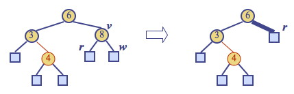
A double black corresonds to underflow in (2,4) trees (and here the images I am borrowing from Goodrich & Tamassia go to greyscale!):
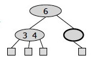
Goodrich & Tamassia’s algorithm for remedying a double black node w with sibling y considers three cases, discussed below. (Note that these are different from CLRS’s four cases!)
Case 1: y is black and has a red child: Perform a RBT restructuring, equivalent to a (2,4) transfer, and we are done.
For example, if we have the RBT on the left corresponding to underflow in the (2,4) tree on the right:
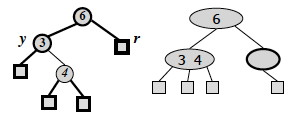
… we do the following restructuring:
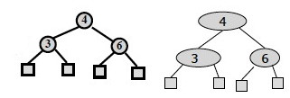
Case 2: y is black and its children are both black: Perform a RBT recoloring, equivalent to a (2,4) fusion, which may propagate up the double black violation.
If the double-black reaches the root we can just remove it, as it is now on all of the paths from the root to the leaves, so does not affect property 5, the depth property.
For example, if we have the RBT on the left corresponding to underflow in the (2,4) tree on the right:
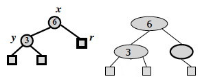
… we do the following recoloring: the black node y is colored red, and the double black node r is colored ordinary black:
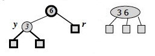
The root of the above subtree takes on an extra black, which propagates only if it was previously black and is not the root. If it was red it merely turns black; if it was the root the extra black no longer affects the balanced black height of the tree.
Case 3: y is red: Perform a RBT adjustment, equivalent to choosing a different representation of a 3-node, after which either Case 1 or Case 2 applies.
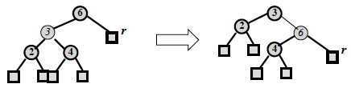
These are both representations of the following 2-4 tree, but the transformation allows one of the other cases to apply, reducing duplication of cases.
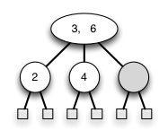
The CLRS chapter divides the situation up into four cases: try to see whether you can map between the above cases and theirs!
The analysis is similar to the previous ones: Θ(lg n) search to find the deletion point (the item to delete may be in an internal node, but we always find its successor in any case, which is at the bottom of the tree), followed by deletion and restructuring O(1) operations that are propagated at most up O(lg n) levels. Deletion is Θ(lg n).
You may want to look at these:
http://secs.ceas.uc.edu/~franco/C321/html/RedBlack/redblack.html
A java applet. You can go step by step and it tells you the rules violated and the fixes. Must click on "next step" until done with process. To delete, click on Delete and then on the node to be deleted. <http://www.csanimated.com/animation.php?t=Red-black_tree>
A flash animation: slides with voice-over. It goes kind of fast (little time to figure out what property is being fixed in each case), and does not let you control slide by slide.
AVL Trees, named for their authors, are the oldest balanced trees. They are binary trees with the requirement that the heights of the left and right subtree of any given node differ at most by 1. A small amount of extra storage is needed to record height differences. Their operations are O(lg n) like RBTs, but may require O(lg n) rotations to rebalance.
Splay Trees are binary trees in which an adjustment moving a node towards the root called splaying is done after every access (including search). There are no rules about properties to maintain and no labels. Amazingly, splaying alone is enough to guarantee O(lg n) behavior in an amortized sense: we will use these as an example when we cover chapter 17 Amortized analysis. They also make frequently accessed items more accessible.
B-Trees, covered in Chapter 18 of Cormen et al. (but not in this course), are balanced multi-way trees that allow up to M keys per node for large M. They are used for trees in external (disk) storage, where speed is optimized by making the size of a node be the same as the size of a block read in by one disk read.
First, here is a summary of the correspondence between (2,4) and Red-Black tree operations:
Insertion: Remedy double red |
||
|---|---|---|
(2,4) tree action |
Red-Black Tree Action |
Result |
| Change of 4-node representation | Restructuring | Double red removed |
| Split | Recoloring | Double red removed or propagated up |
Deletion: Remedy double black |
||
(2,4) tree action |
Red-Black Tree Action | Result |
| Transfer | Restructuring | Double black removed |
| Fusion | Recoloring | Double black removed or propagated up |
| Change of 3-node representation | Adjustment | Restructuring or recoloring follows |
| Search | Insert | Delete | Notes | |
|---|---|---|---|---|
| Hash Table | O(1) expected | O(1) expected | O(1) expected | No ordered dictionary methods. Simple to implement. |
| Doubly Linked List | O(n) | O(1) if not sorted; O(n) if sorted | Θ(1) if node given, O(n) otherwise | Simple to implement. |
| Skip List | O(lg n) with high probability | O(lg n) with high probability | O(lg n) with high probability | Randomized insertion. Simple to implement. |
| Binary Tree | O(n) worst case, O(lg n) random | O(n) worst case, O(lg n) random | O(n) worst case, O(lg n) random | Moderately complex to implement deletion. |
| Red-Black Tree | O(lg n) worst case | Θ(lg n) | Θ(lg n) | Complex to implement. |
From this we can see that hash tables are most efficient expected behavior when no ordered methods are needed, and red-black trees give us the best guarantee when ordering matters.
Dan Suthers Last modified: Mon Mar 3 20:13:52 HST 2014
Images are from lecture slides provided by Michael Goodrich and Roberto
Tamassia, and from the instructor’s material for Cormen et al. Introduction to
Algorithms, Third Edition.